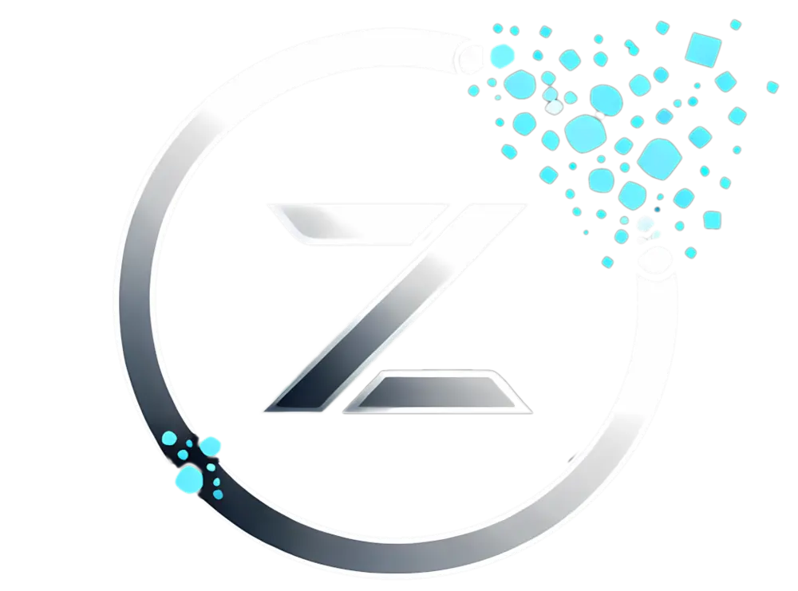
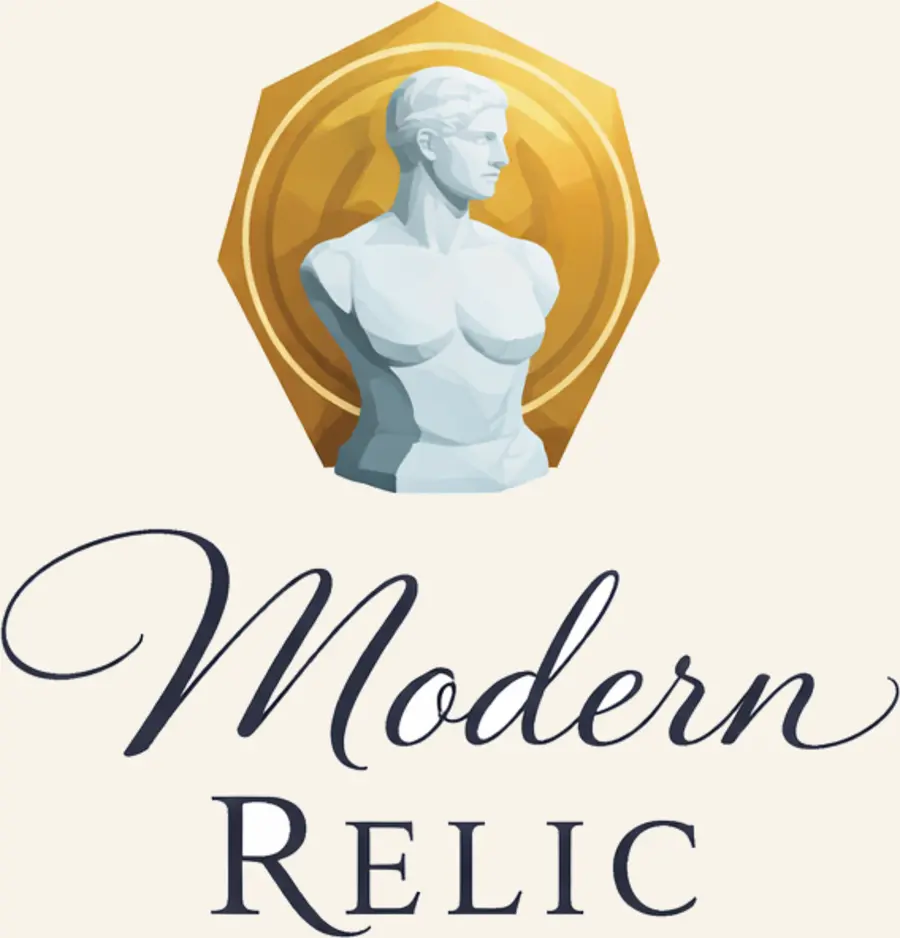

3D Printing
Functional FDM prints, prototypes, replacement parts, fixtures, and short runs.
Design / engineering / manufacturing
Zentropy Solutions helps turn concepts, scans, parts, and experiments into real objects, clean files, and venture-ready systems. The work spans design, CAD, scanning, printing, prototyping, and small-scale manufacturing support.

About Zentropy
Zentropy Solutions operates as a studio hub: one place for client work, internal experiments, and sub-brands that need real technical support behind the aesthetic.
That means the same core capabilities can serve a prototype, a replacement part, a sculptural object, or a future venture without rebuilding the system each time.
Services overview
Functional FDM prints, prototypes, replacement parts, fixtures, and short runs.
High-detail prints for presentation pieces, fine geometry, and premium surfaces.
Scan existing objects for restoration, reverse engineering, or digital reuse.
Solid models, assemblies, part clean-up, and product thinking that can be made.
Tolerances, fit, materials, and print choices that improve useful outcomes.
Iteration, documentation, and small-batch pathways when prototypes need to scale.
Featured ventures

A design-forward venture exploring artifact-like objects shaped through scanning, modelling, printing, and restrained finishing.
Visit Modern Relic
A performer-focused emporium for costume support, prop making, performer identity, media packs, and creative mentoring.
Visit Muse’s EmporiumA writer-first storytelling and worldbuilding platform for nonlinear minds, flexible node-based structure, and human-led creative flow.
Visit LoreLoomSelected work
The projects area is set up to grow into a proper archive of client work, internal experiments, and finished outcomes.
Existing geometry captured, cleaned, remodelled, and prepared for print or fit tests.
CAD, print, test, revise, and repeat until the part is stable enough to keep.
Design-led pieces that blend sculptural character with digital craft and making.
Process
Clarify the object, use case, constraints, and what success looks like.
Model, scan, print, and prepare the first useful version as quickly as possible.
Improve fit, finish, material choice, and repeatability based on real feedback.
Contact
If you have a concept that needs structure, a part that needs rebuilding, or a venture that needs design and technical support under one roof, this is the place to start.
Contact Zentropy